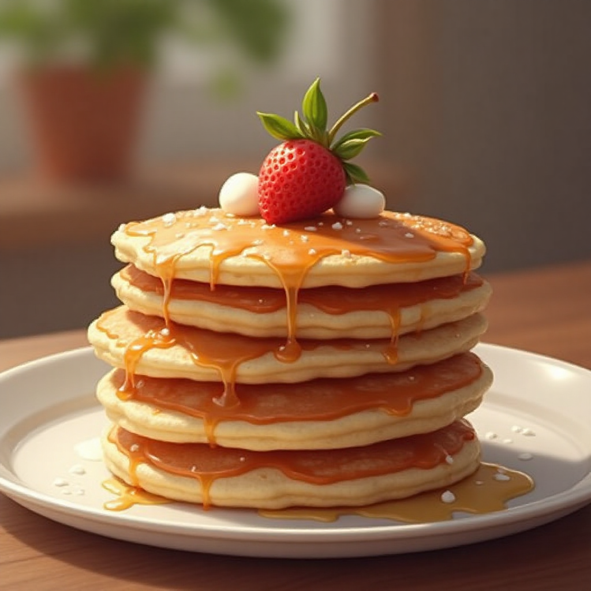
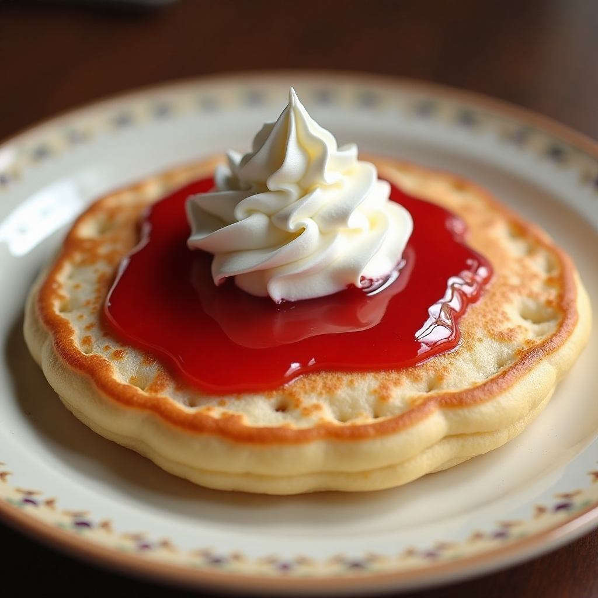
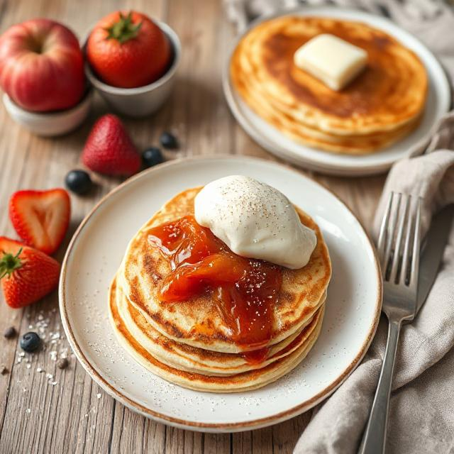

<!DOCTYPE html>
<html lang="sv"></html>

<head>
  <meta name="viewport" content="width=device-width, initial-scale=1.0" charset="UTF-8" />
  <link href="CSS/site.css" rel="stylesheet" />
  <title>Recept</title>
</head>

<body>
  <header>
    
    <h1 class="headerHeading">Enkelt recept på pannkakor</h1>
  </header>
  <main class="content">
    <section>
      <p class="subtitle">Gör traditionella tunna (eller tjocka) pannkakor med detta enkla och goda pannkaksrecept.</p>
    </section>
    <section>
      <h2>Ingredienser (4 port)</h2>
      <ul>
        <li>2,5 dl vetemjöl</li>
        <li> 0,5 tsk salt</li>
        <li>6 dl mjölk</li>
        <li> 3 st ägg</li>
        <li> ca 50 g smör</li>
      </ul>

      <h2>Så här gör du</h2>
      <ol>
        <li>Mät upp vetemjöl och salt i en bunke. Blanda.</li>
        <li>Tillsätt hälften av mjölken och vispa till en jämn smet.</li>
        <li>Vispa ner resten av mjölken och äggen.</li>
        <li>Låt smeten stå och svälla, gärna ca 20 minuter, så håller pannkakssmeten ihop bättre.</li>
        <li>Lägg på en smörklick i stekpannan (en smörklick för varje pannkaka).
          Hetta upp stekpannan på medelhög effekt. När smöret slutar bubbla är det dags att hälla på pannkakssmeten.
        </li>
        <li>Servera pannkakorna med goda tillbehör som t.ex. jordgubbssylt, vispad grädde eller hallon.</li>
      </ol>
    </section>

    <aside>
      <h3 class="serveringRubrik">Serveringsförsag</h3>
        <figure class="servering"></figure>
        <figure class="servering"></figure>
        <figure class="servering"></figure>
    </aside>

  </main>
  <footer class="footer">
    <p>Övning: Pernilla Eldh, 2025</p>
  </footer>

</body>

</html>